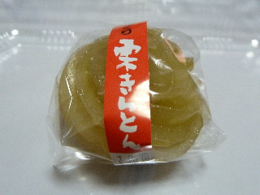
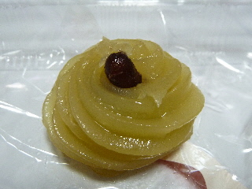
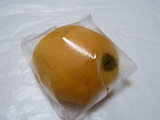

向陽堂の栗きんとん
2012/12/30
お正月の栗きんとんとはちょっと違う、和菓子の栗きんとんです。

ここのは栗あんだけじゃなくて、普通のアンが入っていました。

ちょっと栗ようかんな感じがしました。
島根県出雲市平田町1308番地
2012/12/30
お正月の栗きんとんとはちょっと違う、和菓子の栗きんとんです。

ここのは栗あんだけじゃなくて、普通のアンが入っていました。

ちょっと栗ようかんな感じがしました。
2012/08/05
ビワの形の和菓子です。

味は、おまんじゅうだ！っておもいました。ビワの味はないです。
見た目が可愛くていいですね。
2006/4/10
フォーゲルパークで売ってるベゴニアかすてーらを食べました。
フォーゲルは松江市なので松江市のお菓子屋さんのものかと思ったら、出雲市平田町の坂本向陽堂ってところの商品でちょっと意外でした。
ベゴニアって事で、カステラは朱色に染められています。味は、卵味が少ないかなって感じでした。
私は何故かカステラの朱色を見て、ソーセージとか赤天を想像してしまい、きっとそんな味はしないんでしょうけど魚風味なカステラな気分になってしまい、不思議な気持ちでカステラを食べました。
魚イメージが強すぎたため、実際の味はよくわかりませんでした。